HydroClean ProHeat Complete
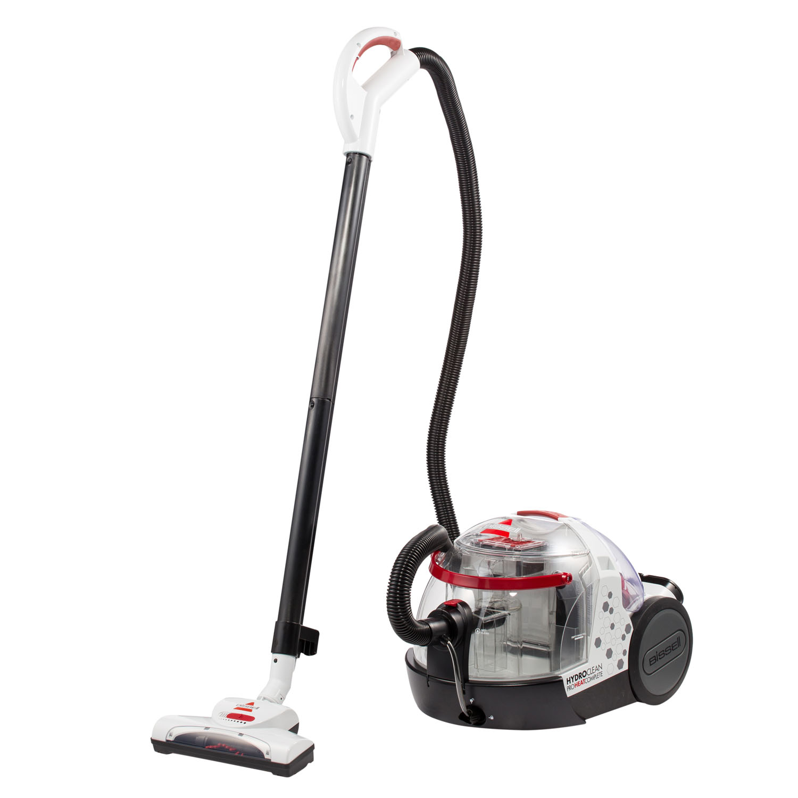Bissell 1474J компактный и мощный моющий пылесос, способный без проблем очистить любую поверхность, в кратчайшее время и с минимальным применением сил. Эта модель - одна из вершин многолетнего развития бизнеса семейства Bissell и внедряемых им технологий.
Система Heatwave Technology™
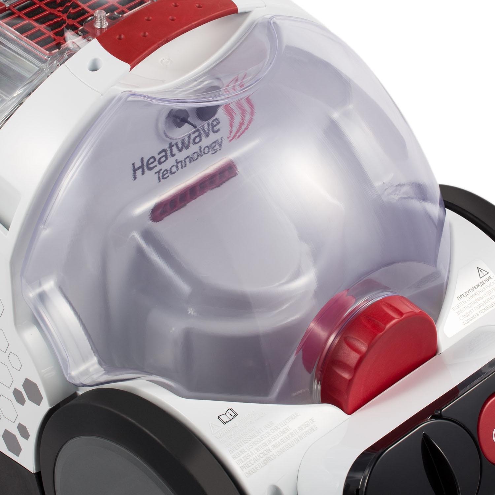Пылесос HydroClean ProHeat Complete оснащен патентованной системой поддержания температуры моющего раствора. Заполните бак горячей водопроводной водой (Мах 70⁰С), добавите моющее средство с помощью крышки колпачка, и система Heatwave будет поддерживать моющий раствор горячим на протяжении всей уборки для достижения максимальной эффективности чистки.
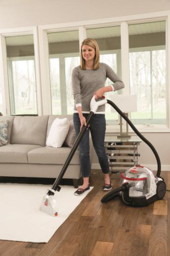Нагрев моющего раствора значительно повышает эффективность уборки:
- При повышении температуры легче растворяется чистящее средство.
- Грязь легче отмывается в горячей воде. Вспомните, как легко помыть посуду дома в раковине горячей водой, используя моющее средство, и как проблематично отмыть грязь на даче, используя холодную воду с тем же моющим средством
-
Большинство микроорганизмов погибают при повышенной температуре:
- микробы - 60-80°С
- сапрофиты - 65°С
- грибки - 75°С
- бактерии - 80°С
Особенностью пылесоса HydroClean ProHeat Complet по сравнению с пароочистителями является возможность не только уничтожать микроорганизмы, но также собирать их и удерживать, не позволяя им попадать обратно в помещение.
3-х ступенчатая фильтрация
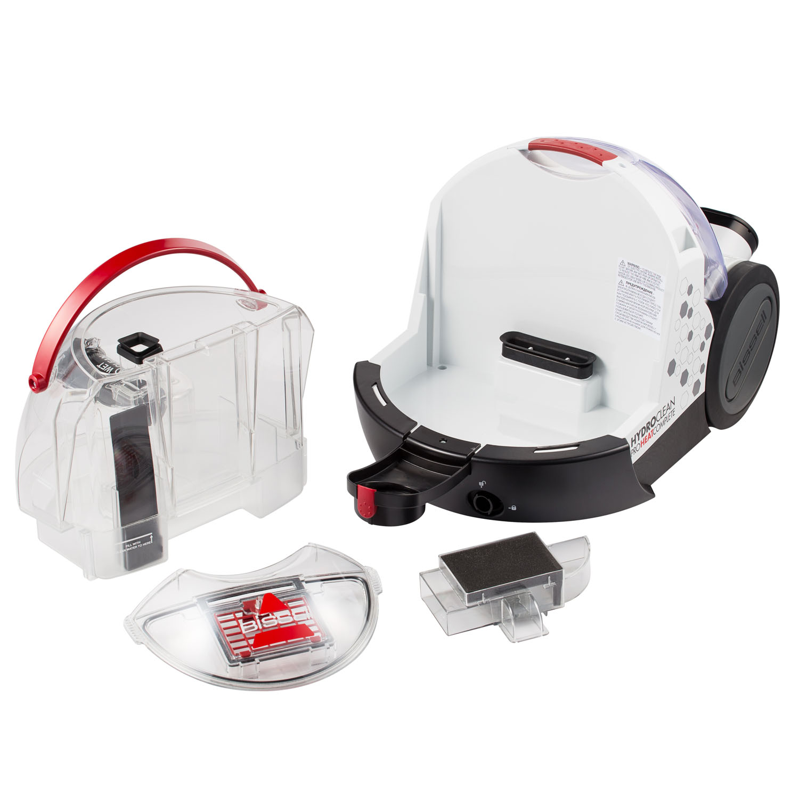- Вода очищает воздух от крупных частиц грязи и пыли
- Предмоторный фильтр задерживает мельчайшие частицы
- НЕРА-фильтр задерживает мелкодисперсную пыль, аллергены, пыльцу растений и т.д. HEPA MEDIA FILTER используется для фильтрации во влажной среде
Именно насадки отвечают за отделение грязи и моющего раствора из глубины и с поверхности очистки. Каждая насадка в пылесосе HydroClean ProHeat Complet создана для выполнения своей определенной задачи.
Насадка с подушкой из микрофибры для мытья и быстрой сушки пола с гладким покрытием
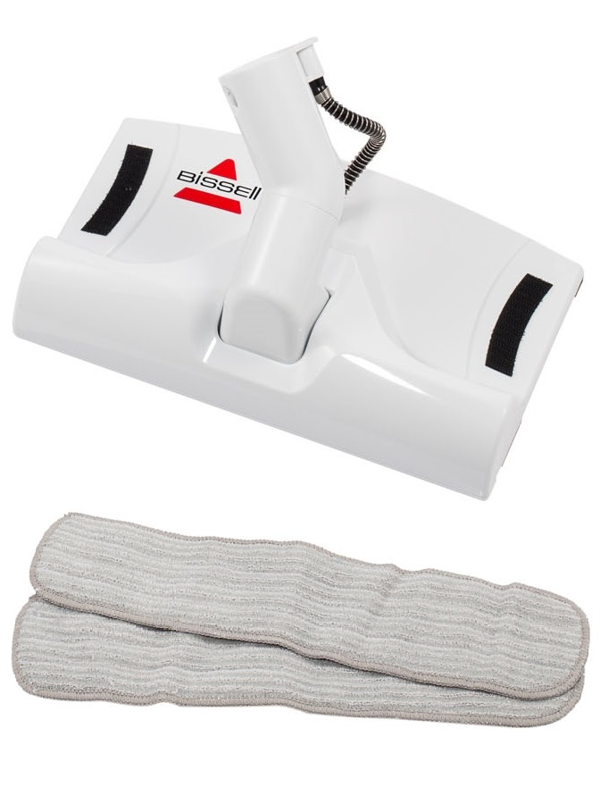Специальная конструкция насадки пылесоса Bissell существенно увеличит срок службы покрытий и защитит их от разбухания под действием моющих растворов и дальнейшего рассыхания. Особенность данной насадки заключается в том, что моющий раствор не разбрызгивается на очищаемую гладкую поверхность из форсунки, а подается внутрь насадки, и по специальному каналу через 6 отверстий распределяется по всей ширине насадки. Это позволяет сократить попадание влаги в щели, которые, безусловно, присутствуют в таких дорогих и капризных к мойке покрытиях, как ламинат, паркетная доска и паркет. Щетка с подушкой из микрофибры распространяет чистящее средство по поверхности и впитывает большую часть воды по мере движения. Это позволяет очень быстро выполнить уборку гладких полов и высушить их. Мягкую, щадящую полы подушку из микрофибры можно мыть и использовать многократно.
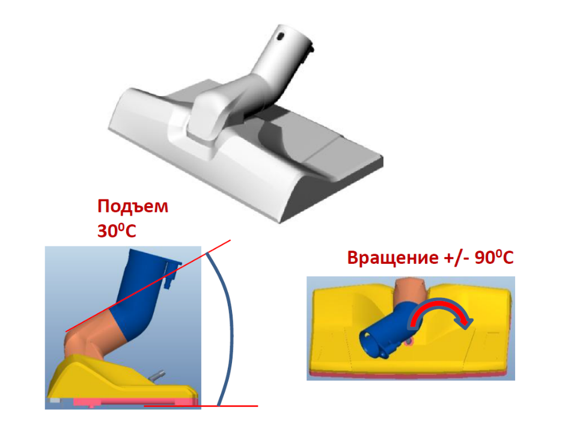Шарнирное соединение насадки с трубкой пылесоса обеспечивает улучшенную маневренность и более низкий профиль насадки.
Насадка для чистки и сушки ковров
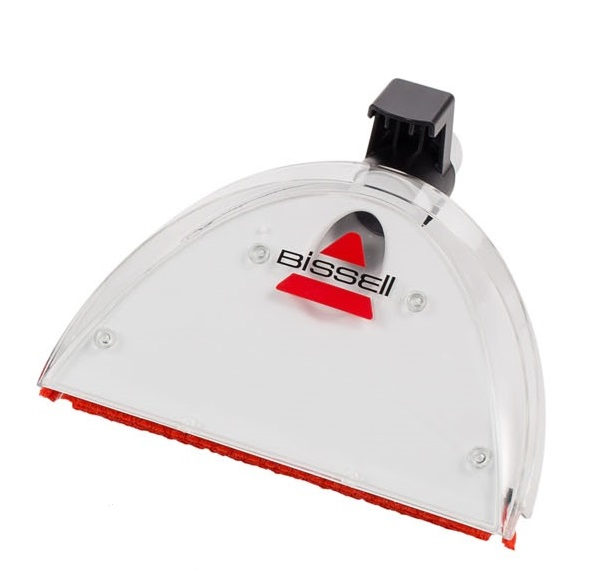Насадка позволяет производить глубинную очистку и сушку ковра всего в 3 приема. И при этом не надо что-либо переключать или менять накладки, достаточно просто изменить угол наклона насадки:
- Смачивание очищаемой поверхности моющим раствором
- Втирание моющего раствора в ворс ковра щеткой
- Высушивание обрабатываемой поверхности, изменяя лишь угол наклона насадки
Остаточная влажность ковра будет минимальной, а благодаря возможности механической очистки и использования нагретого моющего раствора даже въевшаяся грязь легко очистится.
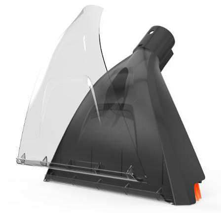Насадка имеет съёмную переднюю панель для лёгкой очистки.
Насадка для чистки и сушки мягкой мебели
Аналогичным образом можно почистить и высушить мягкую мебель, обивку из различных тканей, используя насадку для чистки мягкой мебели и обивки.
Турбощётка
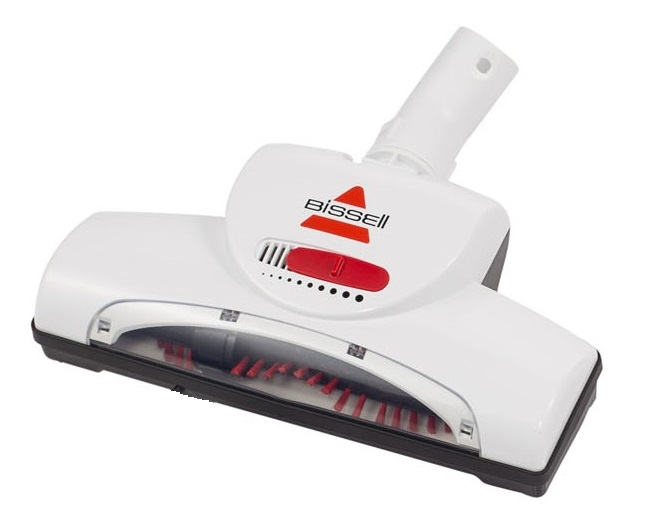Турбощетка в пылесосе HydroClean ProHeat Complet оснащена вставками для дополнительного сбора ниток и шерсти животных и прозрачной передней частью для визуального осмотра чистоты вала. Турбощетка имеет регулировку воздухотока для снижения скорости вращения на коврах с разной длиной ворса и легко разбирается для очистки турбины от загрязнений.
Разъем Quick Release™
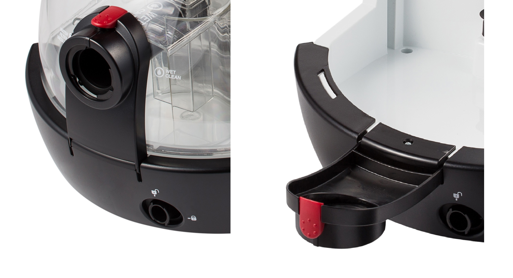В пылесосе HydroClean ProHeat Complet нет необходимости убирать шланг во время удаления контейнера с грязной водой.
Поскольку шланг крепится не к контейнеру с грязной водой, а к специальному откидному механизму, это исключает протекание грязной воды из шланга на пол при снятии контейнера как в других моющих пылесосах.
Контейнер для хранения насадок
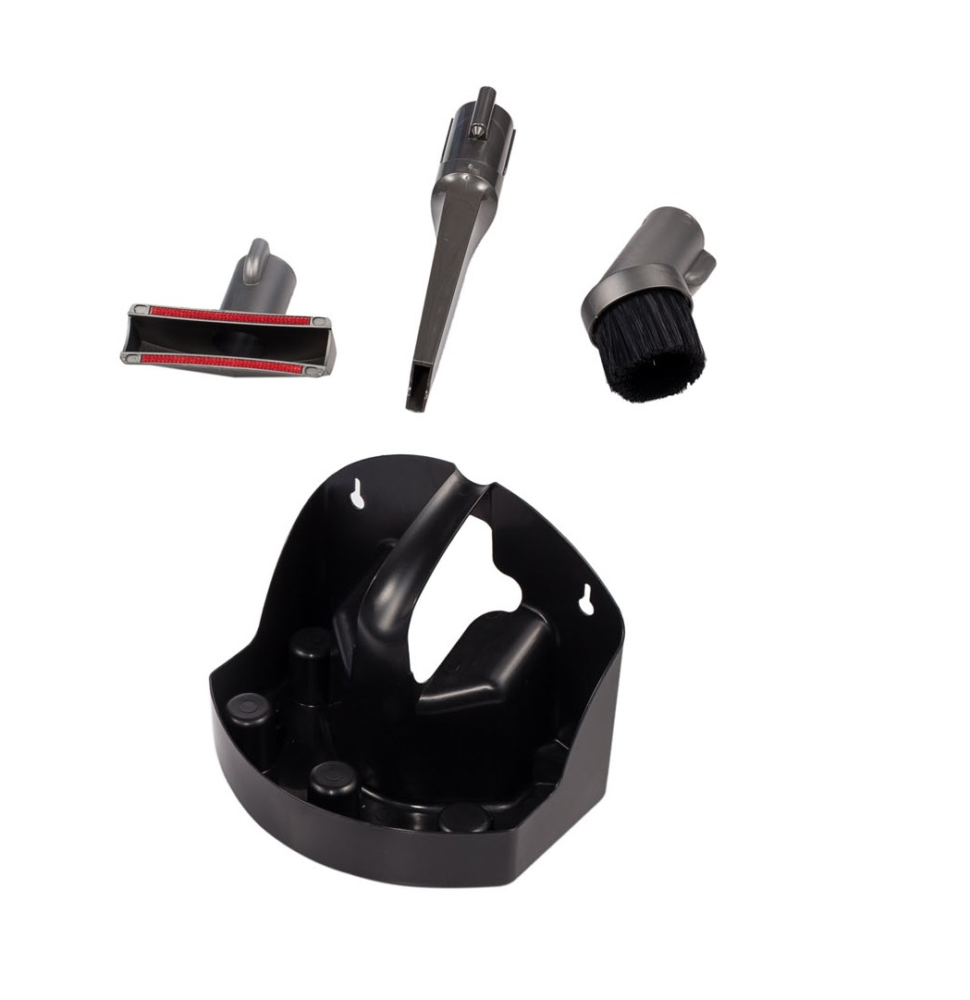Удобен для хранения чистящих щеток, насадок и других аксессуаров HydroClean ProHeat Complet, которые могут понадобиться во время сухой чистки. Это очень удобно. Контейнер легко устанавливается в отсек для емкости с моющим раствором. Так же его можно подвесить на стену.
Удобная рукоятка Bissell
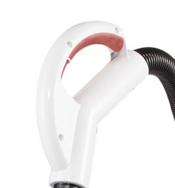Специально разработанная конструкция рукоятки (оптимальная толщина, форма, угол, положение клавиши подачи моющего раствора) обеспечивает максимальный комфорт при работе с пылесосом.
Microban
Данное покрытие защищает резервуар для грязной воды от развития бактерий и неприятного запаха. Так же, данный компонент входит в состав тканевых насадок для швабр.
Сетевой шнур Bissell
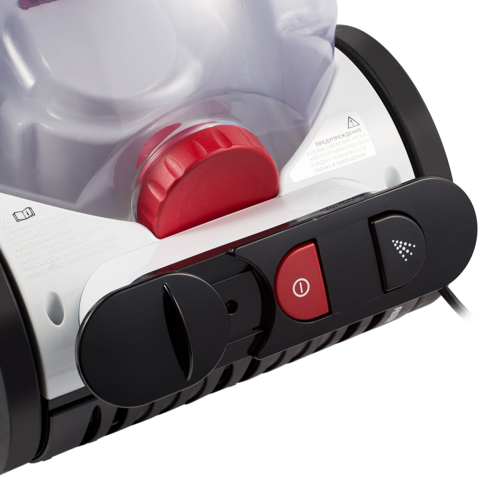
Длина сетевого шнура составляет 6 м.
Для удобного и надежного хранения во избежание выхода из строя сматывающей пружины, сетевой шнур наматывается на держатель как в профессиональных приборах.
Сдвижной фиксатор позволяет легко и быстро размотать шнур.
Режимы работы
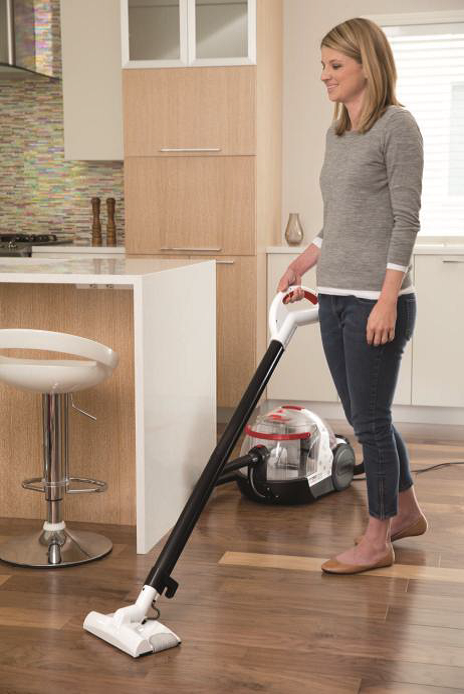- Сухая уборка ковров, твердых полов, мягкой мебели и т.д.
- Влажная уборка твердых покрытий
- Влажная глубокая чистка ковров
- Сбор пролитой жидкости (водяной насос)
- Очистка засоров в бытовой сантехнике
- Аквафильтр - очистка воздуха.
Защитные механизмы Bissell
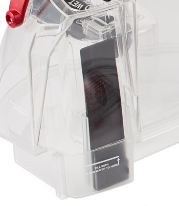При переполнении емкости с грязной водой (4,5 л), поплавок в емкости перекроет всасывание воздуха. Это защитит от попадания влаги на фильтры и крыльчатку двигателя.
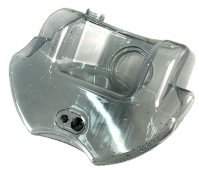Емкость для моющего раствора снабжена 2-мя клапанами, срабатывающими в случае повышения или понижения давления, возникающего при изменении температуры воды.
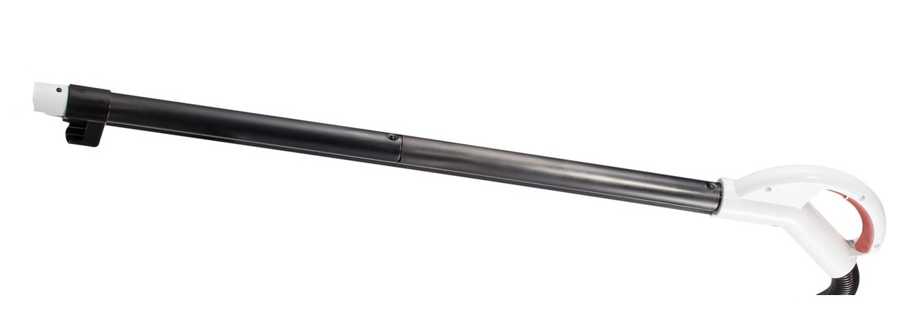Шланг для подачи моющего раствора проходит внутри всасывающего шланга, рукоятки, трубок. Это выигрышно отличает пылесос HydroClean ProHeat Complet от конкурентов, основное неудобство которых заключается во времени подготовки к работе, сборке, креплении, очистке после работы, хранении шланга и фиксаторов на шланг. Качественные материалы и двойная защита шланга для подачи моющего раствора гарантируют длительный срок эксплуатации. Рукоятка, трубки, насадки снабжены специальными фиксаторами. Поэтому во время уборки не происходит разъединения конструкции.
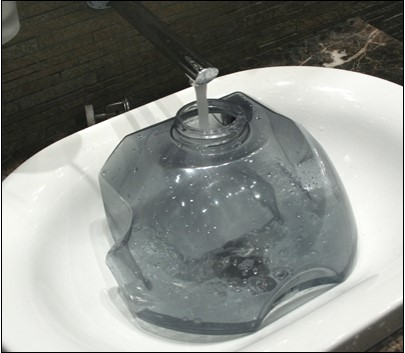По сравнению с конкурентами, в пылесосе HydroClean ProHeat Complet большая (5 л) емкость для моющего раствора с легкостью помещается в раковине для набора воды.
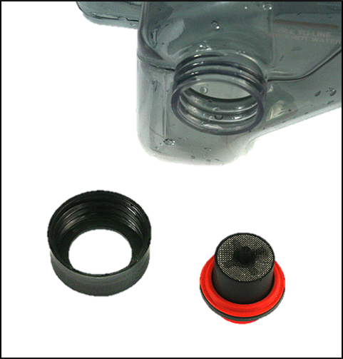Фильтр из нержавеющей стали защищает помпу и систему нагрева от примесей, которые могут присутствовать в емкости с моющим раствором.
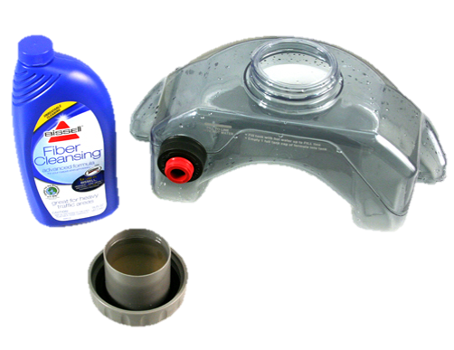Крышка емкости для моющего раствора одновременно является мерным стаканом для чистящего средства. Это удобно и не требует дополнительных емкостей, которые придется мыть.
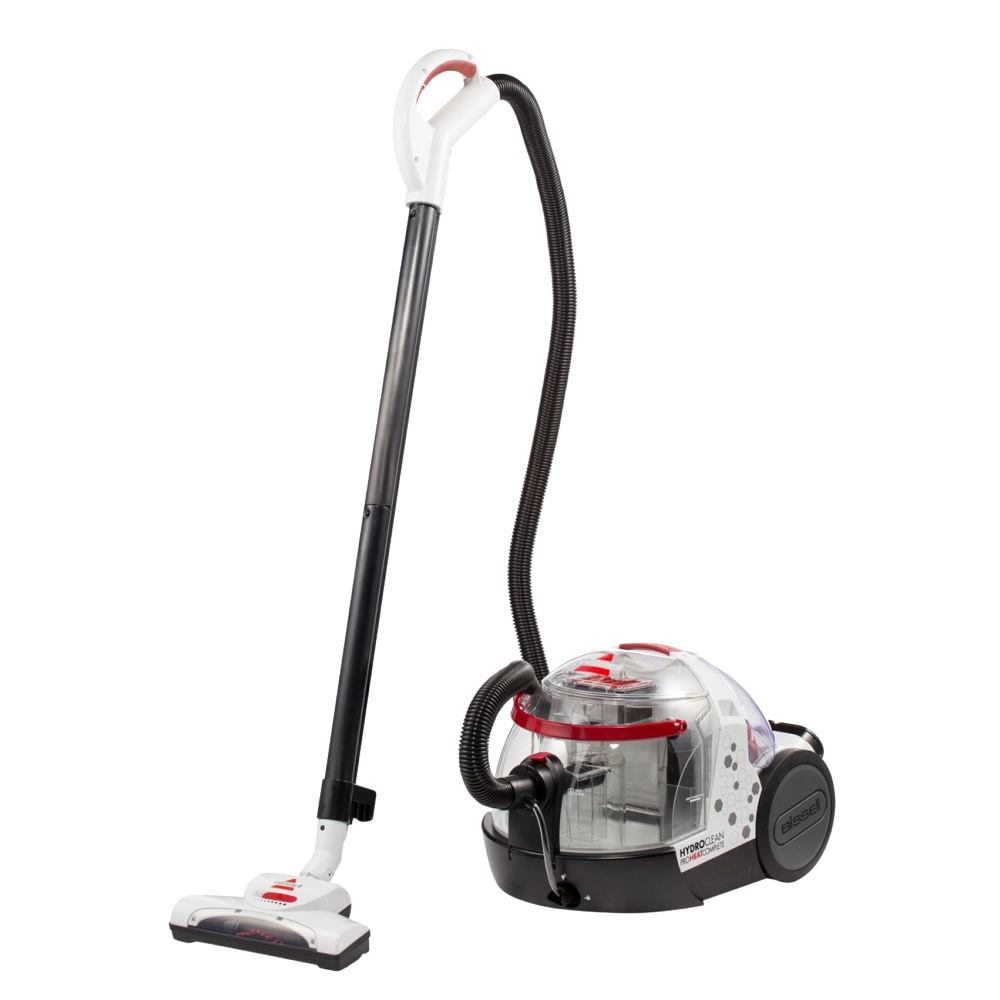У пылесоса HydroClean ProHeat Complet предусмотрена парковка шланга, трубок и насадки. Это удобно и при хранении, и во время работы.
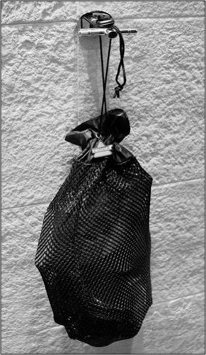Для дополнительных насадок и чистящих средств (в комплекте 2 шт.) в комплектации имеется специальный сетчатый мешок для хранения и просушивания.
Технические характеристики
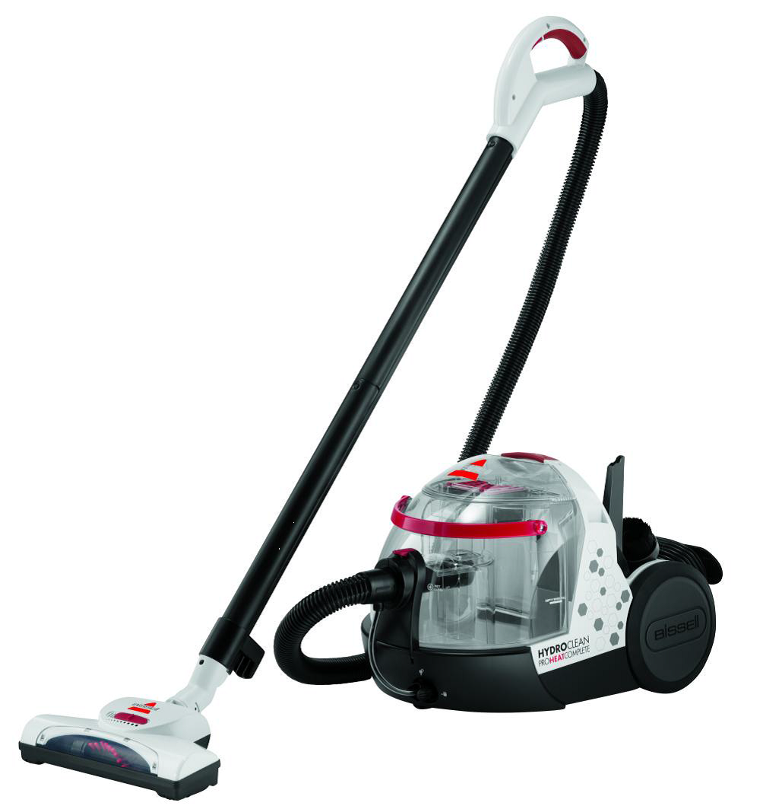
Потребляемая мощность: 1800 Вт
Мощность всасывания: 150 аВт
Использование горячей воды: 70 ⁰С
Объем резервуара для чистой воды – 5 л, для грязной воды – 4,5л.
Длина шнура 6 м
Длина шланга 2,5 м
Уровень шума: 82 дБ
Вес: 16 кг